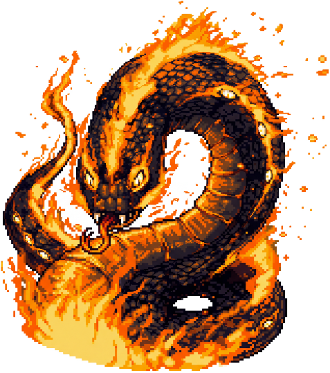
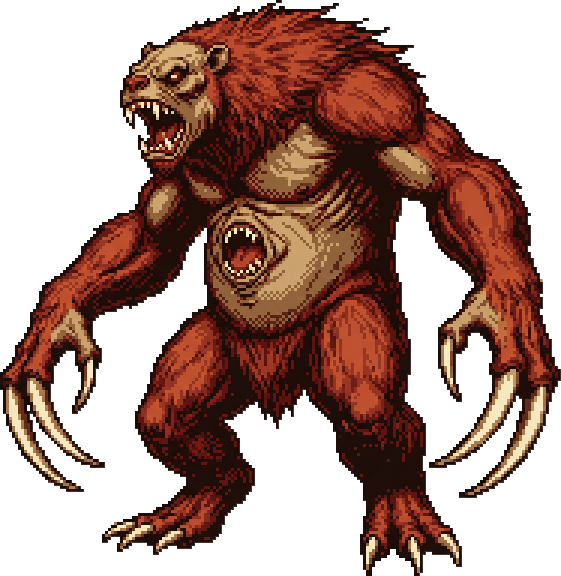
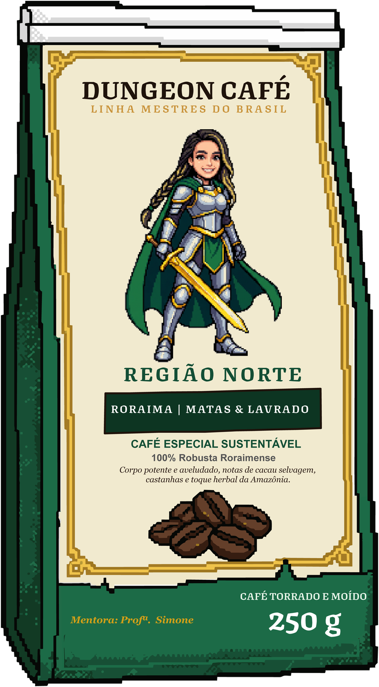
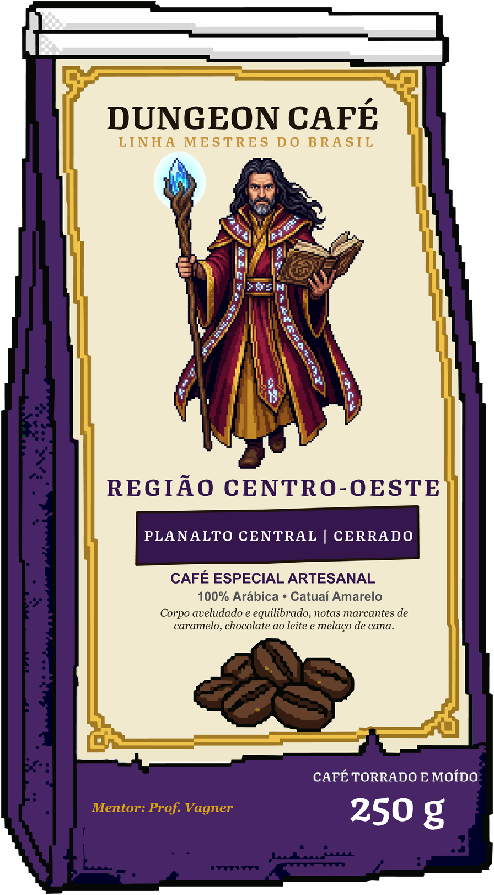
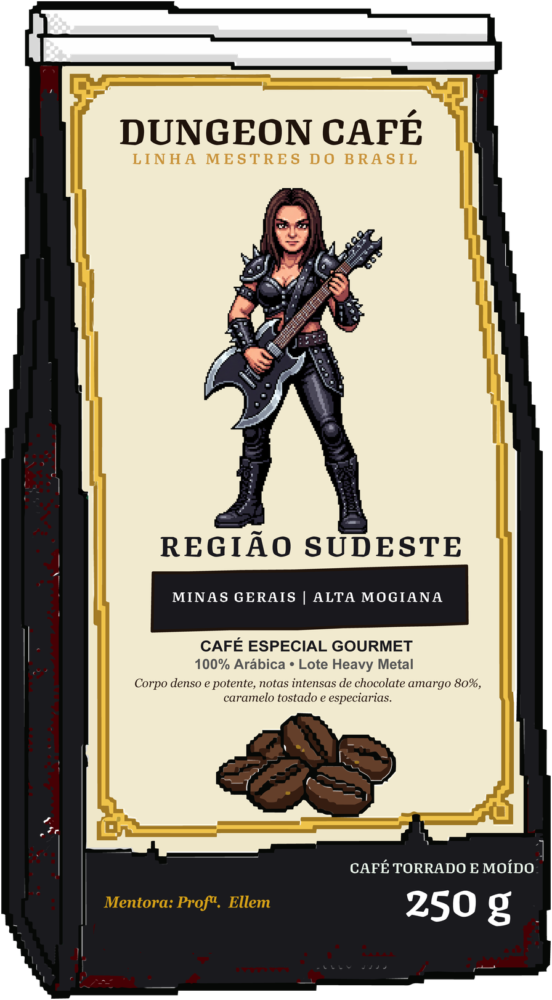
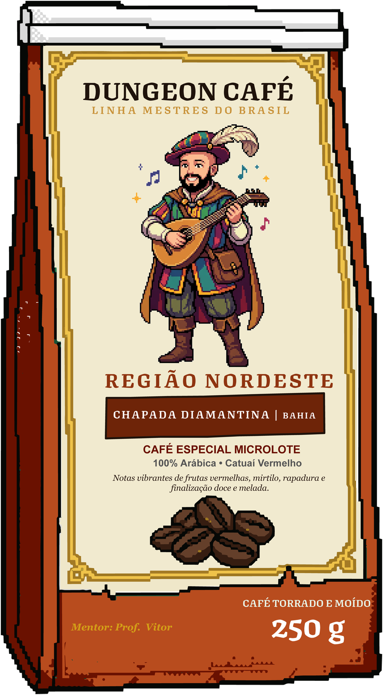
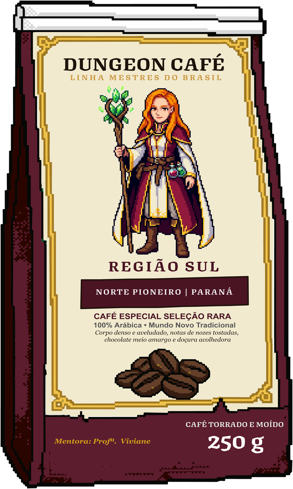

Nível 5 · Meio da jornada
Boitatá, a serpente de fogo
Vença e receba o título Guardião da Torra, um item raro em forma de grão e 5% de desconto na próxima compra ou mensalidade.
Linha Mestres do Brasil · IFRR Zona Oeste
Cafés especiais das cinco regiões do Brasil na sua porta — e cada pacote vira nível, item e batalha contra os chefes do folclore brasileiro.
Como funciona
O Dungeon Café transforma o café do dia a dia em uma poção de foco e restauração. Você assina ou compra avulso, recebe seus grãos e evolui junto com o seu mentor.
Escolha um plano mensal de 2, 3 ou 4 pacotes de 250 g, em grão ou moído, ou compre um pacote avulso da região que quiser.
Cada embalagem representa uma região cafeeira e traz um QR Code de uso único.
Escaneie o QR Code, ganhe XP e equipe itens inspirados em grãos de café torrado.
No nível 5 e no nível 10, enfrente lendas do folclore e ganhe recompensas reais.

Nível 5 · Meio da jornada
Vença e receba o título Guardião da Torra, um item raro em forma de grão e 5% de desconto na próxima compra ou mensalidade.

Nível 10 · Chefe final
Conquiste o título Lenda do Grão, entre no Hall da Fama e ganhe 1 pacote especial grátis + brinde colecionável.
Mapa da Jornada
Cada pacote de 250 g é uma região cafeeira do Brasil, guardada por um mentor.

Terroir Roraima — Lavrado e matas roraimenses
Mentora: Simone · Guerreira

Terroir Cerrado do Planalto Central
Mentor: Vagner · Mago

Terroir Montanhas de Minas Gerais e Alta Mogiana
Mentora: Ellem · Bárbara

Terroir Chapada Diamantina, Bahia
Mentor: Vitor · Bardo

Terroir Norte Pioneiro do Paraná
Mentora: Viviane · Curandeira
Linha Mestres do Brasil
Cinco mestres do IFRR Zona Oeste, transformados em heróis, guardam os segredos das cinco grandes regiões cafeeiras do Brasil.
Guerreira · Região Norte
Terroir Roraima — Lavrado e matas roraimenses
Primeira a erguer a espada pelo Dungeon Café, Simone protege as lavouras pioneiras do extremo Norte, onde o café cresce entre o Lavrado e a floresta. Sua lição é a da coragem sustentável: colher sem ferir a terra e servir, em cada xícara, a força da Amazônia.
Um golpe dourado que corta a névoa do sono e desperta todo o grupo para a primeira aula.
Custo: 2 ☕Folhas de cafeeiro envolvem a guerreira e bloqueiam o cansaço durante a semana de provas.
Custo: 3 ☕Mago · Região Centro-Oeste
Terroir Cerrado do Planalto Central
Guardião do grimório da torra, Vagner estuda o grão como um alquimista estuda o ouro. No solo vermelho do Cerrado, ele descobriu que o tempo e o fogo certos transformam uma semente verde em pura energia — e ensina essa alquimia a quem tiver paciência.
Converte grãos verdes em grãos dourados, liberando aromas de chocolate e caramelo.
Custo: 3 ☕Inscrições arcanas que ampliam a concentração do grupo por uma sessão inteira de estudos.
Custo: 2 ☕Bárbara · Região Sudeste
Terroir Montanhas de Minas Gerais e Alta Mogiana
Vinda das montanhas do Sudeste, berço do ciclo histórico do café, Ellem troca o silêncio da serra pelo rugido da guitarra-machado. Sua fúria é pura energia: ela ensina que intensidade e paixão fazem um grão — e uma turma inteira — chegar ao ponto certo.
Um golpe de guitarra-machado que estilhaça o desânimo e mói o sono em pó fino, pronto para um espresso encorpado.
Custo: 3 ☕Um brado que ecoa pelas montanhas e restaura a moral do grupo depois de uma derrota difícil.
Custo: 2 ☕Bardo · Região Nordeste
Terroir Chapada Diamantina, Bahia
Com o alaúde nas costas e histórias na ponta da língua, Vitor percorre a Chapada Diamantina cantando os cafés especiais que brotam entre pedras e cachoeiras. Cada canção sua ensina que café bom é aquele partilhado em roda, com prosa e música.
Uma melodia animada que concede +foco e +ânimo a todos os aliados que a ouvem.
Custo: 2 ☕Um acorde que ecoa pelos vales e distrai os chefes, abrindo espaço para o ataque do grupo.
Custo: 3 ☕Curandeira · Região Sul
Terroir Norte Pioneiro do Paraná
Mestra das poções, Viviane conhece a doçura dos cafés do Norte Pioneiro do Paraná e todos os métodos de extração — do coado ao cold brew. Para ela, cada xícara é um remédio para o corpo cansado e um carinho para a mente de quem estuda.
Um coado doce e equilibrado que recupera a energia de um aliado após a madrugada de estudos.
Custo: 2 ☕Um cold brew preparado sob a lua que regenera todo o grupo aos poucos, durante o dia inteiro.
Custo: 4 ☕Escolha seu mentor e comece a jornada
Jogar agoraClube de assinatura
Preço pensado para o orçamento estudantil. Cancele quando quiser.
Assinatura mensal
R$54,90/mês
Mais escolhido
Assinatura mensal
R$79,90/mês
Assinatura mensal
R$99,90/mês
Pacote de 250 g · sem assinatura
Prefere experimentar antes? Compre um pacote de 250 g da Linha Mestres do Brasil, da região que quiser, com QR Code para subir de nível.
R$34,90/pacote
Comprar avulso* Valores ilustrativos para o projeto de extensão.